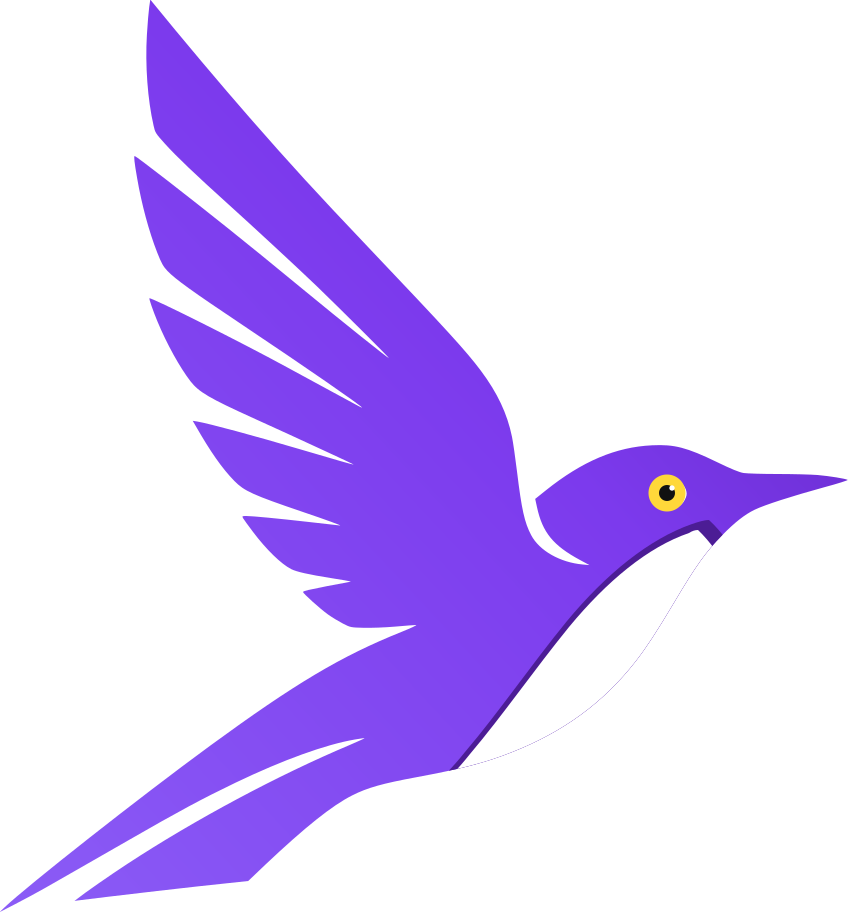

// asset · svg · vector
The Starling logo, in SVG.
One vector file — a violet-backed starling in flight, filled with a single linear gradient — drawn through Starling's own SVG rasterizer. Scale it to any size and the edges stay crisp.

One file, every size
32px48px72px120px